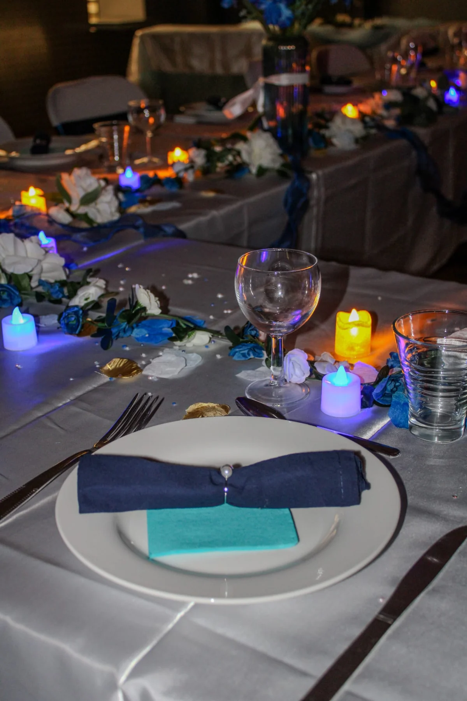

Habiller le lieu
Décoration de salle, compositions et éléments décoratifs : créer un ensemble qui trouve sa place dans votre réception.
Décoration & mise en scène
en Ardèche
Vos envies deviennent un décor.
Nous l’imaginons, le préparons et l’installons.
À vous de vivre ce qui compte.
Mariages, baptêmes, anniversaires,
réceptions privées & événements professionnels.
Accorder les matières, composer les tables, faire dialoguer les détails.
Nous donnons forme à un décor qui vous ressemble.
Le bleu du linge. Le blanc des fleurs. Quelques éclats de doré. Puis le soir arrive, et une autre atmosphère se dessine.
Une réception CAAB. Deux atmosphères.
Quatorze photographies pour la découvrir.
Du volume d’une salle au pli d’une serviette, nous composons votre décor à toutes les échelles.
Décoration de salle, compositions et éléments décoratifs : créer un ensemble qui trouve sa place dans votre réception.
Accorder le linge, les fleurs, les serviettes et la verrerie. Imaginer ce que chaque invité découvre en s’asseyant.
Partir de vos envies et de vos couleurs pour préparer un décor personnalisé, puis l’installer sur votre lieu.
Notre métier : la décoration, sa préparation et son installation. L’organisation complète de l’événement reste entre vos mains.
Ce que vous aimez. Ce que vous voulez partager. La façon dont vous imaginez vos invités réunis.
Chez CAAB ÉVÉNEMENTS, tout commence par cet échange. Nous faisons ensuite dialoguer votre lieu, les couleurs et les matières pour donner forme au décor.
Et vous, qu’imaginez-vous ?
Votre occasion, votre lieu, vos envies et les détails qui comptent pour vous.
Une ambiance, des couleurs et des éléments qui dessinent un univers cohérent.
Les éléments de la mise en scène prennent forme autour du projet défini ensemble.
Nous installons le décor sur le lieu. Le moment peut commencer.
Une idée précise ou quelques couleurs en tête : le premier pas, c’est de raconter.
Un rayon d’environ 50 km est annoncé. La commune de départ et les possibilités de déplacement restent à préciser.
Un essai, pour vous projeter. Ce formulaire est une démonstration : rien n’est envoyé ni enregistré. Utilisez des informations fictives pour le tester.
Démonstration · Aucune demande envoyée